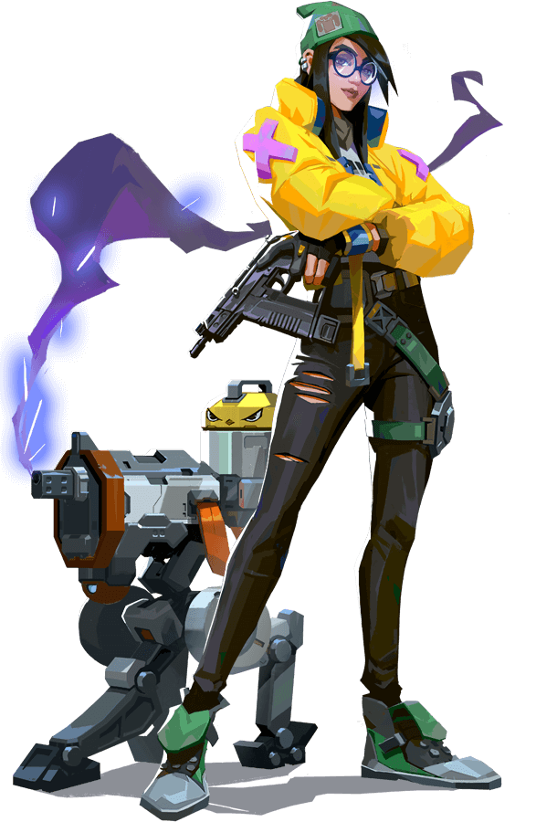

킬조이
C : 나노스웜 비용:200 갯수:2
나노스웜 수류탄을 장착합니다. 발사하면 수류탄을 투척합니다.
수류탄은 지면에 닿으면 잠복 상태가 됩니다.
수류탄을 활성화하면 적에게 피해를 입히는 나노스웜을 발사합니다.
Q : 알람 봇 비용:200 갯수:1
잠복 알람봇을 장착합니다. 발사하면 사거리 내에 들어온 적을 추적하는 봇을 배치합니다.
대상에 도달하면 봇은 폭발하여 적을 취약 상태로 만들고 피해를 입힙니다.
장착을 길게 누르면 배치된 봇을 회수합니다.
E : 포탑 비용:- 갯수:1
포탑을 장착합니다. 발사하면 전방 180도 원뿔형 범위 안에 들어온 적을 공격하는 포탑을 배치합니다.
장착을 길게 누르면 배치된 봇을 회수합니다.
X : 봉쇄 비용:7킬
봉쇄 장치를 장착합니다. 발사하면 장치를 배치합니다.
대기시간이 지나면 범위 내 탐지된 모든 적을 구속합니다. 봉쇄장치는 적에 의해 파괴될 수 있습니다.